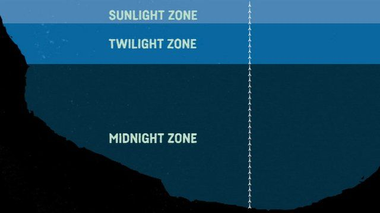
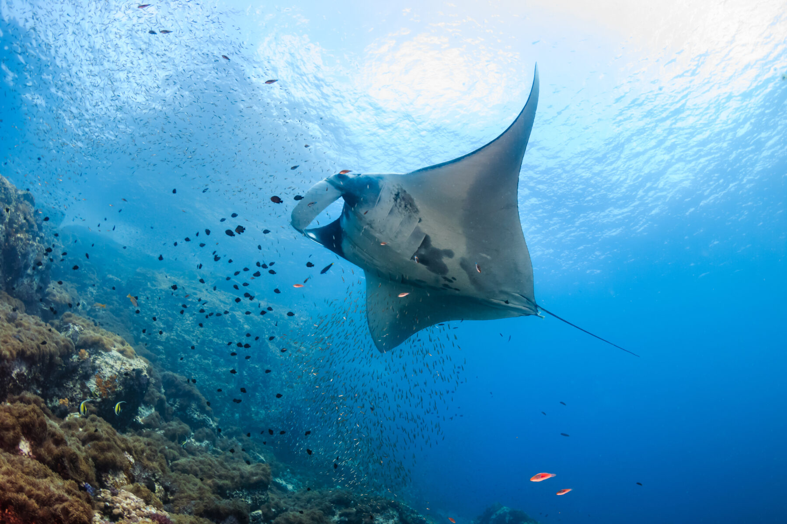

Zones of the Ocean: Interactive Map

Sunlight Zone (Epipelagic Zone)
- Depth: 0 - 200 meters
- Description: The uppermost layer of the ocean where sunlight penetrates. This zone is full of life, including dolphins, sharks, and colorful fish that live among coral reefs.
Twilight Zone (Mesopelagic Zone)
- Depth: 200 - 1,000 meters
- Description: Below the Sunlight Zone, light begins to fade. This area is home to fascinating creatures like jellyfish and squids that can produce their own light, called bioluminescence.
Midnight Zone (Bathypelagic Zone)
- Depth: 1,000 - 4,000 meters
- Description: No sunlight reaches here. Creatures in this zone must adapt to total darkness. The eerie glow of the anglerfish and giant squids are some of the rare inhabitants of this zone.
Ocean Facts
- More than 80% of the ocean remains unexplored.
- The longest mountain range on Earth, the Mid-Ocean Ridge, is underwater. It stretches over 40,000 miles!
- More historical artifacts are underwater than in all museums combined.
- The largest waterfall on Earth, the Denmark Strait Cataract, is found beneath the ocean.
- Jellyfish have existed for over 500 million years!
Famous Oceanographers
- Jacques Cousteau: A pioneer in marine exploration, Cousteau co-developed the Aqua-Lung, enabling underwater diving.
- Sylvia Earle: Known as "Her Deepness," she is a marine biologist and ocean advocate who has logged over 7,000 hours underwater.
Featured Ocean Species
The Majestic Manta Ray
The manta ray glides through the ocean with graceful movements, using its large, wing-like fins. They can grow to be up to 7 meters across and are often found near coral reefs or feeding on plankton in open waters.
Coral Reef Survival Guide
| Species | Habitat | Threats | Conservation Status |
|---|---|---|---|
| Clownfish | Shallow coral reefs | Pollution, climate change | Near threatened |
| Hawksbill Turtle | Tropical Coral Reefs | Poaching, habitat loss | Critically Endangered |
| Great White Shark | Coastal regions | Overfishing | Vulnerable |
| Blue Tang | Coral reefs, lagoons | Habitat Destruction | Least Concern |